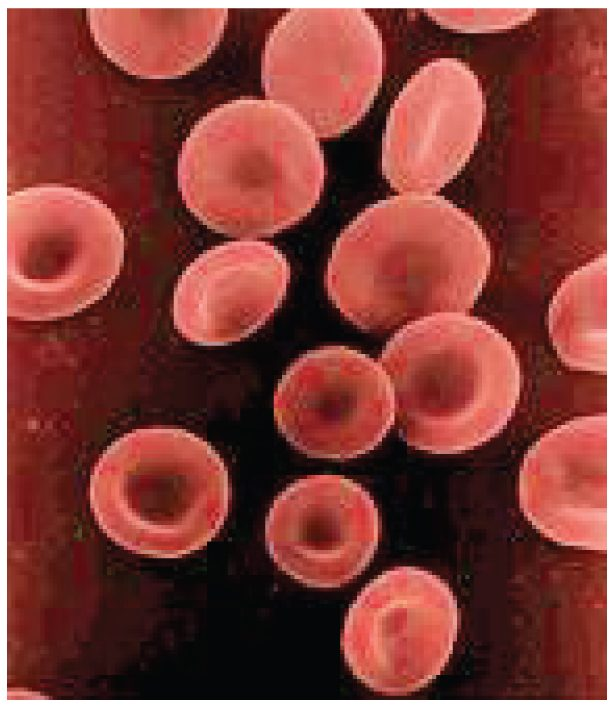
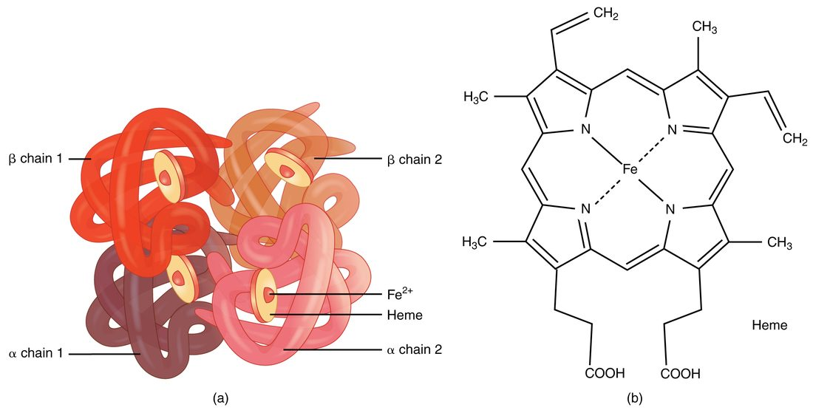
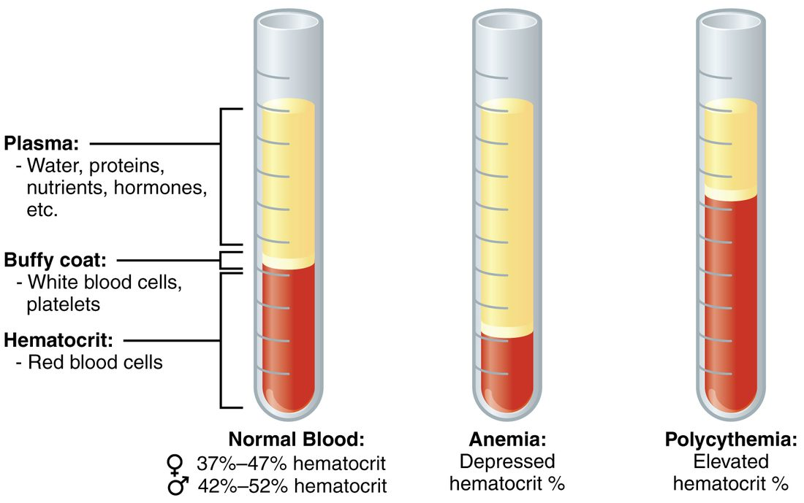

Red blood cells are the most numerous cells in your body, and nearly everything about them follows from one job: carrying oxygen bound to hemoglobin. This page covers red blood cell function and structure, how hemoglobin is built, how your marrow makes new red cells under the control of erythropoietin, what happens to an old red cell and its iron, and the disorders that follow when any of these steps goes wrong: jaundice, the anemias, sickle cell disease and polycythemia.
The erythrocyte: a bag of hemoglobin
Look at red blood cells under a scanning electron microscope and they look like tiny candies pressed in from both sides (Figure 1). Each is an erythrocyte (erythr- = red, -cyte = cell), the formal name for a red blood cell.

An erythrocyte is about 7.5 µm across, about 2 µm thick at the rim and under 1 µm thick in the center: a biconcave disc (bi- = two, concave = hollowed). Its structure explains what it can do:
- No nucleus and no organelles. As it matures in the marrow, the cell throws out its nucleus and breaks down its ribosomes and mitochondria. That leaves room for more hemoglobin, which makes up about a third of the cell's weight. It also means a mature red cell cannot divide, cannot make new proteins and cannot repair itself.
- Glycolysis only. With no mitochondria, a red cell makes its ATP by glycolysis, splitting glucose without using oxygen. So it does not use up any of the oxygen it carries.
- A thin, flat shape. No point inside the cell is far from the membrane, so oxygen diffuses in and out quickly. The shape also gives a large surface area for the cell's volume.
- A flexible skeleton. A mesh of proteins under the membrane, chiefly spectrin, lets the cell fold and stretch. Red cells squeeze single file through capillaries narrower than they are, then spring back.
Each microliter of blood holds about 4.2–5.4 million red cells in women and 4.7–6.1 million in men. Your whole body holds about 25 trillion of them.
Hemoglobin
Hemoglobin (hemo- = blood, globin = the protein part) is the red, iron-containing protein that fills erythrocytes and carries oxygen (Figure 2). Each molecule has two parts:
- Globin. Four folded protein chains. In adults, two are alpha chains and two are beta chains, each made from its own gene.
- Heme. Each globin chain holds one heme group: a flat ring built of carbon and nitrogen, with a single iron ion (Fe2+) at its center. Heme is the pigment that makes blood red.

Each iron ion binds one oxygen molecule, reversibly. One hemoglobin molecule can therefore carry four oxygen molecules. Oxygen binds where it is plentiful, in the lungs, and comes off where it is scarce, in the tissues. How binding at one site changes the others, and what shifts the balance, is taught with oxygen transport in the respiratory chapter. The globin chains also carry a small share of the body's carbon dioxide and pick up hydrogen ions, which helps buffer the blood.
Worked example 1: how much oxygen one red cell can carry
Problem. A red blood cell holds about 280 million hemoglobin molecules. How many oxygen molecules can it carry when fully loaded?
- Oxygen per hemoglobin. Four hemes, one iron each, one oxygen per iron: 4 oxygen molecules.
- Multiply. 280 million × 4 = 1,120 million.
Answer. About 1.1 billion oxygen molecules per red cell.
A blood test reports hemoglobin as grams per deciliter (g/dL, grams per 100 mL of blood). Typical values are about 13.5–17.5 g/dL in men and 12–15.5 g/dL in women. Men run higher because testosterone raises erythropoietin release and the marrow's response to it.
Erythropoiesis: making red blood cells
Erythropoiesis (erythro- = red, -poiesis = making) is the making of red blood cells. It is one line of the myeloid branch of hematopoiesis that you met in the last topic, and it runs in red bone marrow at more than 2 million cells per second.
- A myeloid stem cell, driven by erythropoietin, becomes a proerythroblast.
- Over several divisions, its daughters, the erythroblasts, make hemoglobin until it fills their cytoplasm, while the nucleus shrinks.
- The cell pushes out its nucleus. It is now a reticulocyte (reticul- = little net): it still holds a net of ribosomes, which stains as a fine mesh.
- Reticulocytes leave the marrow. Within a day or two in the blood they lose their ribosomes and become mature erythrocytes.
From proerythroblast to reticulocyte takes about a week. Normally about 1% of the red cells in a blood sample are reticulocytes. The reticulocyte count is therefore a direct readout of how fast the marrow is working: it rises when the marrow speeds up, as after a bleed, and stays low when the marrow cannot respond.
Worked example 2: how many red cells you make each day
Problem. An adult has about 25 trillion red blood cells, and each lives about 120 days. The number is steady. How many new red cells must the marrow make each day, and each second?
- Steady state. If the number is not changing, the marrow must make as many cells each day as are destroyed. On average, 1/120 of the cells are replaced each day.
- Per day. 25 trillion ÷ 120 = about 0.21 trillion, or 210 billion cells per day.
- Per second. A day has 86,400 seconds. 210 billion ÷ 86,400 = about 2.4 million cells per second.
- Check against the reticulocyte count. 1/120 is about 0.8%. Each new cell spends about a day as a reticulocyte in the blood, so about 1% of red cells should be reticulocytes, which matches the normal count.
Answer. About 210 billion a day, or 2.4 million a second.
What the marrow needs
- Iron, for the heme in every hemoglobin molecule.
- Vitamin B12 and folate, both needed to make DNA. Erythroblasts divide fast, so they are among the first cells to suffer when either runs short.
- Amino acids, for the globin chains, and energy.
The erythropoiesis feedback loop
Your red cell count stays remarkably steady for years, yet it climbs within weeks if you move to a high mountain town. Both facts come from one negative feedback loop (Figure 3). Its sensors are in the kidneys, not the marrow:
- Stimulus. The oxygen reaching the kidney tissue falls. That happens when there are too few red cells (anemia, blood loss), when the air holds less oxygen (high altitude), or when the lungs cannot load the blood fully (lung disease).
- Sensor and control center. Specialized cells in the kidney tissue, between the kidney's tiny tubes, sense the low oxygen. In low oxygen, a transcription factor that is normally destroyed within minutes survives and switches on the erythropoietin gene.
- Signal. The cells release erythropoietin (EPO), a hormone, into the blood. A little also comes from the liver.
- Effector. EPO binds receptor proteins on erythroid precursors in the red marrow. More of them survive, divide and mature, and reticulocytes pour out within 3–5 days.
- Response. Over weeks, the red cell count and hemoglobin rise, so each liter of blood carries more oxygen.
- Feedback. As oxygen delivery to the kidneys recovers, EPO release falls back, and production slows to its resting rate.
Because the loop senses oxygen delivery rather than counting cells, anything that lowers the oxygen reaching the kidneys raises red cell production, and anything that stops the kidneys making EPO lowers it. People with failing kidneys often become anemic for exactly this reason, and they are treated with injected EPO. The same hormone, taken to raise the red cell count of a healthy athlete, is a banned form of doping.
The red blood cell life cycle
A red blood cell lasts about 120 days. It cannot make new proteins, so as it ages its membrane stiffens, its enzymes wear out and marks of age collect on its surface. Macrophages recognize these old or damaged cells and engulf them, mainly in the spleen and the liver and to a lesser extent in the bone marrow (Figure 4).
![A numbered cycle diagram of the red blood cell's life. New cells form in the marrow of the skeleton and pass through stages into the bloodstream, where they circulate. Old cells are engulfed by a large scavenger cell. Inside it the protein is split: the protein chains become amino acids; the iron is carried away by a blood protein and either reused in the marrow or stored in the liver; and the rest of the pigment is converted in two steps into a green and then a yellow pigment that the liver handles.](../figures/os-18-8.jpg)
Inside the macrophage, hemoglobin is taken apart, and each part goes its own way:
- Globin is digested into amino acids, which are reused to build new proteins anywhere in the body.
- Iron is released into the blood and carried by transferrin, either back to the marrow for new hemoglobin or to storage (see the next section).
- The heme ring, without its iron, cannot be reused. An enzyme opens the ring to make biliverdin (bili- = bile, verd- = green), a green pigment, which is quickly converted into bilirubin (rub- = red), a yellow-orange pigment.
Where bilirubin goes
- Bilirubin leaves the macrophage. It does not dissolve well in water, so it travels in the plasma bound to albumin.
- Liver cells take it up and attach a sugar-derived group to it (conjugation), which makes it water-soluble.
- The liver secretes this conjugated bilirubin in bile, which drains into the intestine.
- Bacteria in the intestine convert it to urobilinogen. Most is turned into stercobilin, a brown pigment that colors feces.
- A little urobilinogen is absorbed back into the blood, and the kidneys excrete it as urobilin, the yellow pigment of urine.
The color changes of a bruise follow the same path in miniature: red cells leaked into the tissue are broken down by local macrophages, and the bruise turns from purple to green (biliverdin) to yellow (bilirubin) before it fades.
Iron transport and storage
An adult holds about 3–4 g of iron, two thirds of it in hemoglobin. Iron is recycled far more than it is replaced:
- Each day, macrophages recover about 20–25 mg of iron from old red cells, nearly all of what the marrow needs.
- You absorb only about 1–2 mg a day from food, through the upper intestine. That matches the small daily loss in shed skin and gut cells. Menstruation adds, on average, another 0.5–1 mg a day, and pregnancy much more.
Free iron is toxic: it drives reactions that damage cell membranes and DNA. So iron is almost always bound to a protein:
| Transferrin | Ferritin | Hemosiderin | |
|---|---|---|---|
| What it is | A plasma protein (a beta globulin) that carries iron | A hollow protein shell that stores iron inside cells | Clumped, partly broken-down ferritin with its iron |
| Where | Blood plasma | Liver cells, macrophages, marrow | Macrophages and liver, mostly when iron is in excess |
| Job | Delivers iron to the marrow and other cells, which take it in by receptor-mediated endocytosis | Holds iron in a safe, quickly released form | Long-term store; releases iron slowly |
| What a blood test tells you | How much iron is in transit | A little leaks into plasma; a low plasma ferritin means empty stores | Not measured in blood; seen in tissue samples |
The name roots are simple: trans- = across plus ferr- = iron, for the carrier; ferr- plus -itin, a protein ending, for the store; hem- = blood plus sider- = iron, for the pigment left behind.
Jaundice
When bilirubin builds up in the blood, it stains the tissues yellow. Jaundice (French jaune = yellow) is this yellowing of the skin, the sclera (the whites of the eyes) and the mucous membranes. Normal plasma bilirubin is under about 1.2 mg/dL; jaundice becomes visible above about 2.5–3 mg/dL, first in the sclera.
Bilirubin can build up at any of three points along its route:
| Before the liver | In the liver | After the liver | |
|---|---|---|---|
| What goes wrong | Red cells are destroyed faster than the liver can handle the bilirubin | Damaged liver cells take up, conjugate or secrete bilirubin poorly | Bile cannot drain into the intestine |
| Examples | Sickle cell disease; other hemolytic anemias | Viral infection of the liver; alcohol damage | A gallstone or tumor blocking the flow of bile |
| Bilirubin that builds up | Mostly unconjugated | Both kinds | Mostly conjugated |
| Urine and feces | Normal-colored urine | Often dark urine | Dark urine; pale, clay-colored feces |
The urine and feces follow from the chemistry. Only conjugated bilirubin dissolves in water, so only it can spill into urine and darken it. If no bilirubin reaches the intestine, no stercobilin forms and the feces are pale.
Newborn jaundice is common and usually harmless. A newborn breaks down its large supply of fetal red cells, which live only about 60–90 days, while its liver's conjugating enzyme is still immature. Bilirubin peaks around the third to fifth day. Very high levels of unconjugated bilirubin can enter the brain and damage it (kernicterus), so babies with high levels are treated with blue-light phototherapy, which changes bilirubin in the skin into forms the body can excrete without conjugating them.
Anemia
Anemia (an- = without, -emia = blood condition) is a fall in the blood's ability to carry oxygen, because it holds too little hemoglobin. In practice it is defined by the hemoglobin level: below about 13 g/dL in men and 12 g/dL in women who are not pregnant. On a spun sample, the red column is short (Figure 5).

Whatever the cause, the symptoms follow the same chain. Less hemoglobin means less oxygen delivered, so muscles tire early and you feel weak. With less red pigment in the skin's vessels, skin, lips and nail beds look pale. Your heart beats faster and pumps more blood each minute: the thinner blood flows more easily, and sympathetic activity rises. Breathing speeds up mainly on exertion. Muscles short of oxygen lean on glycolysis sooner and release acid, and the acid drives faster breathing. Your blood's oxygen sensors are not the trigger: they respond to the pressure of dissolved oxygen, which stays normal in anemia.
The causes fall into three groups: losing red cells (bleeding), making too few, or destroying them too fast.
| Type | Cause | Red cells look | Reticulocyte count |
|---|---|---|---|
| Hemorrhagic anemia | Blood loss: sudden (an injury) or slow (a bleeding ulcer, heavy periods) | Normal at first; small and pale once iron runs out | Rises after 3–5 days |
| Iron-deficiency anemia | Too little iron for heme: slow blood loss, poor diet, pregnancy | Small and pale | Low |
| Pernicious anemia | Too little vitamin B12 absorbed, because the stomach lining no longer makes the protein needed to absorb it | Large | Low |
| Aplastic anemia | The marrow stops making blood cells: drugs, toxins, radiation, immune attack | Normal, but few; white cells and platelets fall too | Very low |
| Thalassemia | Inherited: too little of the alpha or beta globin chain is made | Small and pale; many destroyed early | Often raised |
| Hemolytic anemias | Red cells destroyed early: sickle cell disease, some infections | Depends on the cause | High |
| Anemia of kidney failure | Failing kidneys make too little erythropoietin | Normal | Low |
How to read the table
- The reticulocyte count separates "not making" from "losing or destroying". A healthy marrow facing blood loss or early destruction speeds up, so reticulocytes rise. A marrow short of iron, B12 or EPO, or one that has failed, cannot.
- Cell size points to the missing ingredient. Without enough iron, erythroblasts keep dividing but cannot fill with hemoglobin, so the cells come out small and pale. Without B12 or folate, DNA synthesis stalls: the cells keep growing but divide too few times, so they come out large.
- Right after a sudden bleed the hematocrit is normal, because cells and plasma are lost together. It falls over hours as fluid moves into the blood and dilutes what is left.
Vitamin B12 is also needed by nerve cells, so pernicious anemia can cause numbness and unsteadiness as well as anemia. It is usually treated with B12 injections, which bypass the need for absorption. Very high oral doses also work, because a small fraction of swallowed B12 is absorbed without that carrier protein.
Sickle cell disease
Sickle cell disease (also called sickle cell anemia) is an inherited disease caused by a single mutation in the beta globin gene. One base change replaces one amino acid, glutamic acid, with valine at the sixth position of the beta chain. The result is hemoglobin S (HbS).
The chain of events runs from one amino acid to the whole body:
- When HbS gives up its oxygen, the swapped amino acid forms a sticky patch on its surface.
- HbS molecules stick to each other and line up into long, stiff fibers.
- The fibers bend the red cell into a rigid crescent, or sickle.
- Sickled cells cannot fold through capillaries. They jam small vessels, starving tissue downstream of oxygen: attacks of severe pain, strokes, and damage to the lungs, kidneys and spleen.
- Sickled cells are also destroyed after only 10–20 days, causing hemolytic anemia and jaundice.
Anything that makes HbS give up oxygen or crowds it together, such as low oxygen, dehydration, cold or infection, can set off a crisis.
A person with the disease has inherited the sickle gene from both parents. A person with one sickle gene and one normal gene has sickle cell trait. Their red cells hold enough normal hemoglobin to sickle only under extreme conditions, so they usually have no symptoms. The trait gives partial protection against severe malaria, which is why the gene is common in people whose ancestors lived where malaria was widespread, including sub-Saharan Africa, the Mediterranean, the Middle East and India.
Treatment includes pain control, fluids, transfusions and the drug hydroxyurea, which raises the production of a form of hemoglobin, normally made before birth, that does not sickle. A stem cell transplant can cure the disease, and gene therapies were approved in 2023.
Polycythemia
Polycythemia (poly- = many, cyt- = cell, -emia = blood condition) is an abnormally high red cell count and hematocrit. It has three kinds of cause:
- Primary. In polycythemia vera, a mutation in marrow stem cells makes them produce red cells without waiting for EPO. EPO levels are low.
- Secondary. Something raises EPO: living at high altitude, long-standing lung disease or sleep apnea, a tumor that secretes EPO, or EPO taken for doping. The marrow is responding normally to the signal.
- Relative. Plasma volume falls, as in dehydration, so the hematocrit rises although the red cell mass is normal.
The harm comes from viscosity. More red cells make the blood thicker, which raises resistance to flow. Blood flows more slowly through small vessels, blood pressure can rise and clots form more easily. Primary polycythemia is treated by removing blood regularly to bring the hematocrit down.